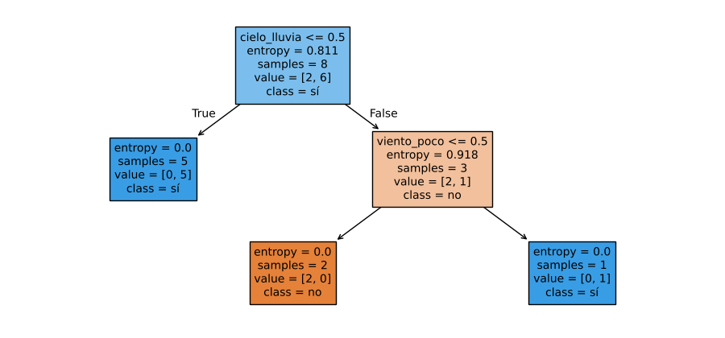
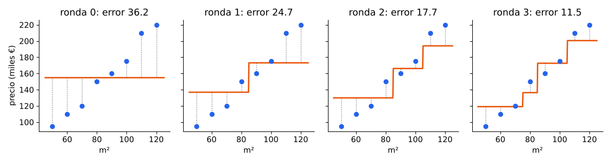
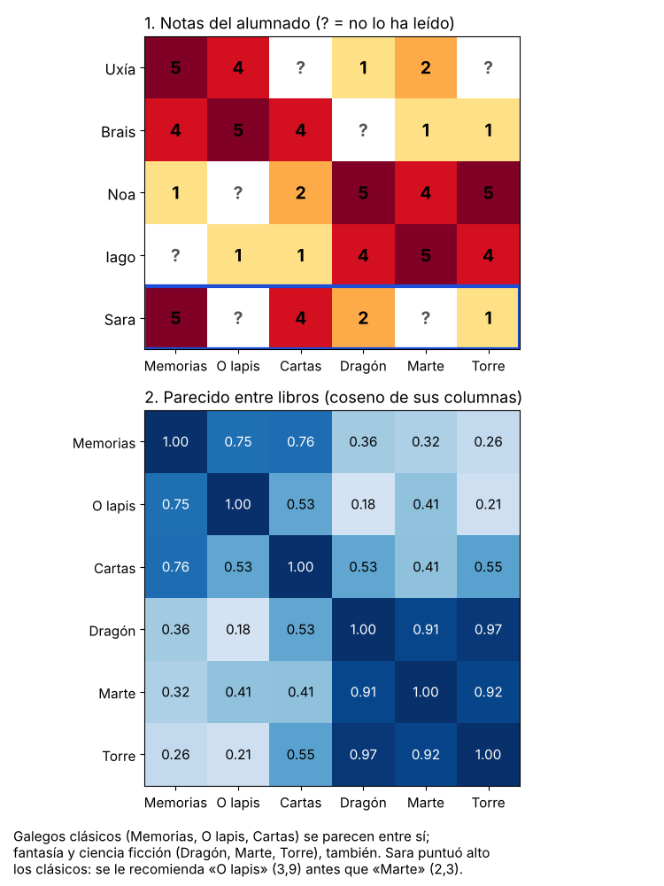

Algoritmos de IA
Todos los algoritmos de la web en un solo sitio, agrupados por familias: qué hacen en una frase, cuándo usarlos, cómo se llaman en Python y dónde están explicados. Después, fichas completas de los más importantes, una guía para elegir y tres ejercicios.
De dónde sale. El catálogo reúne los algoritmos que ya estaban repartidos por la teoría, las unidades y los ejercicios. Las fichas de regresión lineal, k vecinos y k-means amplían un carrusel de Instagram, 3 Algoritmos de Machine Learning que tenés que aprender (@todo_code), corrigiendo sus errores (al final de la página). El carrusel termina anunciando un curso de pago de Java; aquí todo se hace en Python con scikit-learn.
Cómo leer el catálogo
Un algoritmo es una receta: una lista de pasos que siempre termina y resuelve un tipo de problema. En IA se usan para buscar (el camino más corto), optimizar (el mejor valor), aprender de datos (predecir, agrupar) o aprender actuando (refuerzo). Cada familia responde a una pregunta distinta:
| Familia | Pregunta | ¿Necesita datos con respuesta? | Unidad |
|---|---|---|---|
| Búsqueda | ¿Qué pasos llevan del inicio a la meta? | No: necesita el mapa de estados | UD1 |
| Optimización | ¿Qué valores dan el mejor resultado? | No: necesita una función que medir | UD1, UD5 |
| Supervisado: regresión | ¿Cuánto? (un número) | Sí | UD5 |
| Supervisado: clasificación | ¿Cuál? (una clase) | Sí | UD3, UD4, UD5 |
| No supervisado | ¿Qué grupos o estructura hay? | No | UD5 |
| Redes neuronales | Patrones complejos en imágenes, texto, audio | Sí (casi siempre) | UD3, UD4, UD5 |
| Refuerzo | ¿Qué acción da más premio a la larga? | No: aprende probando | UD1, UD5 |
Catálogo
Búsqueda y optimización
| Algoritmo | Idea en una frase | Cuándo usarlo | Python | En la web |
|---|---|---|---|---|
| Búsqueda en anchura (BFS) | Explora por capas: todos los estados a 1 paso, luego a 2... | Camino con menos pasos cuando todos cuestan igual | collections.deque |
UD1 sección 6, 0.7 |
| Búsqueda en profundidad (DFS) | Sigue un camino hasta el final y retrocede | Explorar todas las soluciones (reinas, laberintos) | recursión | UD1 sección 6 |
| Dijkstra | Expande siempre el estado más barato hasta ahora | Camino más corto con distancias distintas (GPS) | heapq |
UD1 sección 6, 14.17 |
| A* | Como Dijkstra, pero sumando una estimación de lo que falta | Camino más corto en mapas grandes (videojuegos, robots) | heapq |
Ficha |
| Minimax | Elige la jugada mejor suponiendo que el rival juega lo mejor posible | Juegos de dos jugadores (tres en raya, ajedrez) | recursión | UD1 sección 6 |
| Ascenso de colinas | Prueba un vecino y se queda con él si mejora | Optimizar sin fórmula; cae en óptimos locales | bucle | UD1 sección 7, 0.8 |
| Descenso del gradiente | Da pasos en la dirección en que más baja el error | Entrenar casi todos los modelos (regresión, redes) | NumPy, PyTorch | UD1 ejercicio 7.2, 14.7 |
| Algoritmos genéticos | Una población de soluciones que se cruzan, mutan y se seleccionan | Problemas sin gradiente (horarios, diseño) | bucle | 0.8 |
Aprendizaje supervisado
| Algoritmo | Idea en una frase | Cuándo usarlo | scikit-learn | En la web |
|---|---|---|---|---|
| Regresión lineal | La recta (o plano) que mejor pasa por los puntos | Predecir un número con relación aproximadamente lineal; línea base | LinearRegression |
Ficha, UD5 sección 3 |
| Ridge, Lasso | Regresión lineal que castiga los coeficientes grandes | Muchas columnas, riesgo de sobreajuste; Lasso elige columnas | Ridge, Lasso |
UD5 sección 3 |
| Regresión logística | Una recta que separa clases y da una probabilidad (sigmoide) | Clasificación binaria explicable; línea base | LogisticRegression |
UD5 sección 4 |
| k vecinos (KNN) | Mira los k ejemplos más parecidos y vota (o promedia) | Pocos datos y pocas columnas; fronteras irregulares | KNeighborsClassifier,
KNeighborsRegressor |
Ficha, UD5 sección 4 |
| Árbol de decisión | Preguntas «¿mayor que...?» encadenadas | Reglas explicables; datos mezclados | DecisionTreeClassifier |
Ficha, UD5 sección 4, sección 6 |
| Random forest | Muchos árboles distintos que votan | Tablas: buen resultado sin apenas ajustar | RandomForestClassifier |
UD5 sección 7 |
| Gradient boosting (XGBoost, LightGBM) | Árboles en serie, cada uno corrige los errores del anterior | Tablas: suele ser el mejor | HistGradientBoostingClassifier |
Ficha, UD5 sección 7 |
| AdaBoost | Modelos muy simples en serie; cada uno da más peso a lo que el anterior falló | Ver la idea del boosting; hoy se usa menos que el gradient boosting | AdaBoostClassifier |
Ficha |
| SVM | La frontera con el mayor margen posible entre clases | Datos medianos con muchas columnas | SVC |
Ficha, UD5 sección 4 |
| Naive Bayes | Multiplica las probabilidades de cada característica por clase | Texto (spam, temas): rápido y con pocos datos | MultinomialNB |
Ficha, UD4 sección 6 |
Aprendizaje no supervisado
| Algoritmo | Idea en una frase | Cuándo usarlo | scikit-learn | En la web |
|---|---|---|---|---|
| k-means | k centros; cada punto al más cercano; los centros se mueven a la media | Grupos redondos de tamaño parecido | KMeans |
Ficha, UD5 sección 8 |
| DBSCAN | Grupos = zonas densas; lo aislado es ruido | Formas raras, sin saber cuántos grupos | DBSCAN |
UD5 sección 8 |
| Jerárquico | Une poco a poco los grupos más cercanos (dendrograma) | Ver grupos dentro de grupos | AgglomerativeClustering |
Ficha, UD5 sección 8 |
| Mezcla de gaussianas | Grupos con probabilidad, no con etiqueta fija | Puntos que están entre dos grupos | GaussianMixture |
UD5 sección 8 |
| PCA | Resume muchas columnas en pocas que conservan la variación | Dibujar en 2D, comprimir, quitar redundancia | PCA |
UD5 sección 8 |
| t-SNE, UMAP | Dibujo en 2D que respeta los vecinos cercanos | Solo para mirar grupos | TSNE |
UD5 sección 8 |
| Isolation Forest, LOF | Los puntos raros se aíslan con pocos cortes / tienen pocos vecinos | Detectar anomalías (fraude, averías, errores) | IsolationForest, LocalOutlierFactor |
UD5 sección 8 |
| Recomendación (filtrado colaborativo, basado en contenido) | Te recomienda lo que gustó a gente parecida a ti, o lo parecido a lo que te gustó | Libros, música, vídeos, productos | — (NumPy; surprise, implicit) |
Ficha |
Redes neuronales, lenguaje y visión
| Algoritmo | Idea en una frase | Cuándo usarlo | Python | En la web |
|---|---|---|---|---|
| Perceptrón | Suma ponderada + umbral: separa con una recta | Historia y base de todo lo demás; no resuelve la XOR | NumPy | UD5 sección 9, 14.7 |
| Red densa (MLP) | Capas de neuronas con activación no lineal, entrenadas con retropropagación | Patrones complejos; tablas grandes | MLPClassifier, Keras, PyTorch |
14.7 |
| CNN (convolucional) | Filtros que recorren la imagen buscando bordes y formas | Imágenes | Keras, PyTorch | UD3 sección 5 |
| YOLO | Detecta y sitúa varios objetos de una pasada | Detectar objetos en tiempo real | ultralytics |
UD3 sección 6 |
| RNN, LSTM, GRU | Redes con memoria del paso anterior | Secuencias (texto, series temporales) | Keras, PyTorch | UD4 10.8 |
| Transformer (atención) | Cada palabra «mira» a todas las demás | Lenguaje (LLM), también imágenes | Hugging Face | UD4 10.9–10.10 |
| n-gramas | Probabilidad de una palabra según las anteriores | Modelos de lenguaje sencillos, autocompletar | Python puro | UD4 10.3–10.5 |
| TF-IDF | Peso de cada palabra: frecuente en el texto, rara en el resto | Convertir texto en números; buscar documentos | TfidfVectorizer |
UD4 sección 4 |
| word2vec | Cada palabra, un vector; palabras parecidas, vectores cercanos | Similitud de significado | gensim |
UD4 10.4 |
| Convolución, umbral, bordes | Operaciones sobre los píxeles | Procesar imágenes antes de aprender | OpenCV, NumPy | UD3 secciones 2–4 |
Aprendizaje por refuerzo
| Algoritmo | Idea en una frase | Cuándo usarlo | Python | En la web |
|---|---|---|---|---|
| Q-learning | Una tabla con lo que vale cada acción en cada situación, que se corrige con cada premio | Juegos y robots sencillos con pocos estados | NumPy | Ficha |
Fichas
Regresión lineal
Tipo: supervisado, regresión. Pregunta: ¿cuánto? (un número).
Idea. Busca la recta ŷ = m·x + b (con varias
columnas, ŷ = b + m₁x₁ + m₂x₂ + ...) que hace mínima la suma de
los errores al cuadrado (mínimos cuadrados). m es
la pendiente: cuánto cambia ŷ por cada unidad de x.
b es la ordenada en el origen: el valor
cuando x = 0, que muchas veces no tiene sentido real (una casa de 0
m²).
Con el ejemplo del carrusel (datos inventados de precios de casas):
import numpy as np
from sklearn.linear_model import LinearRegression
m2 = np.array([[50], [100], [150], [200]])
prezo = np.array([90_000, 150_000, 210_000, 280_000])
reg = LinearRegression().fit(m2, prezo)
print(round(reg.coef_[0], 1), round(reg.intercept_, 1)) # 1260.0 25000.0
print(reg.predict([[120]])) # [176200.]
print(round(reg.score(m2, prezo), 4)) # 0.9985 (R²)| Recta | 50 m² | 100 m² | 150 m² | 200 m² | Error medio (MAE) |
|---|---|---|---|---|---|
| Datos reales | 90 000 | 150 000 | 210 000 | 280 000 | — |
| La del carrusel: 1000·x + 40 000 | 90 000 | 140 000 | 190 000 | 240 000 | 17 500 |
| Mínimos cuadrados: 1260·x + 25 000 | 88 000 | 151 000 | 214 000 | 277 000 | 2 500 |
La recta del carrusel solo acierta el primer punto: no es «la mejor recta», y con ella la casa de 120 m² costaría 160 000 en lugar de unos 176 200. La pendiente y la ordenada se pueden calcular a mano: m = Σ(x − x̄)(y − ȳ) / Σ(x − x̄)², y b = ȳ − m·x̄ (ejercicio A1).
Ojo: solo vale dentro del rango de los datos (extrapolar a 1000 m² es adivinar); un valor extremo tuerce mucho la recta; y que dos cosas vayan juntas no significa que una cause la otra. Con muchas columnas: Ridge o Lasso.
k vecinos (KNN)
Tipo: supervisado, clasificación y regresión. Pregunta: ¿a qué se parece más?
Idea. No «aprende» nada al entrenar: guarda los ejemplos. Para un dato nuevo, calcula la distancia a todos (normalmente la euclídea, √((x₁−y₁)² + (x₂−y₂)² + ...)), toma los k más cercanos y vota la clase más frecuente (clasificación) o promedia sus valores (regresión).
El error más frecuente: no escalar. La distancia suma diferencias de cada columna; si una va de 0 a 10 000 y otra de 0 a 10, la grande decide todo. Con datos inventados (aprobar según las horas de estudio y una columna de número de identificación, que no tiene nada que ver):
import numpy as np
from sklearn.neighbors import KNeighborsClassifier
from sklearn.preprocessing import StandardScaler
from sklearn.pipeline import make_pipeline
from sklearn.model_selection import cross_val_score
rng = np.random.default_rng(0)
horas = rng.uniform(0, 10, 200) # 0 a 10
ident = rng.uniform(0, 10_000, 200) # 0 a 10 000 (no influye)
aproba = (horas + rng.normal(0, 1.5, 200) > 5).astype(int)
X = np.column_stack([horas, ident])
print(cross_val_score(KNeighborsClassifier(5), X, aproba, cv=5).mean()) # 0.485: ¡como el azar!
print(cross_val_score(make_pipeline(StandardScaler(), KNeighborsClassifier(5)),
X, aproba, cv=5).mean()) # 0.885
print(cross_val_score(KNeighborsClassifier(5), X[:, :1], aproba, cv=5).mean()) # 0.85 solo con las horasSin escalar, el modelo mide distancias casi solo con el número de identificación, que no tiene nada que ver: acierta como lanzar una moneda. Escalar lo arregla; quitar la columna inútil, también.
Elegir k: con k = 1 copia el ruido (sobreajuste); con k muy grande, todo se parece (subajuste). Se elige con validación cruzada (UD5 ejercicio 6.1); en clasificación binaria, mejor impar para evitar empates. Otros inconvenientes: predecir es lento con muchos datos (compara con todos) y con muchas columnas las distancias dejan de distinguir (la «maldición de la dimensionalidad»).
k-means
Tipo: no supervisado, agrupamiento. Pregunta: ¿qué grupos hay?
Idea. 1) Se elige k. 2) Se colocan k centros. 3) Cada punto va al centro más cercano. 4) Cada centro se mueve a la media de sus puntos. 5) Se repiten 3 y 4 hasta que los centros casi no se mueven.
from sklearn.cluster import KMeans
from sklearn.preprocessing import StandardScaler
from sklearn.datasets import load_iris
X = StandardScaler().fit_transform(load_iris().data)
km = KMeans(n_clusters=3, n_init=10, random_state=0).fit(X)
print(km.cluster_centers_.shape, round(km.inertia_, 1)) # (3, 4) 139.8Ojo:
- k lo decides tú: con el codo de la inercia o la silueta (UD5 sección 8), y pensando en el problema.
- El comienzo importa: con centros al azar, cada
ejecución puede dar grupos distintos. scikit-learn coloca los centros
iniciales con k-means++ (separados entre sí) y repite
n_initveces quedándose con el mejor resultado. - Escalar antes, por la misma razón que en KNN.
- Solo encuentra grupos redondos y de tamaño parecido: con formas alargadas o medias lunas, DBSCAN o el jerárquico.
- Los números de grupo (0, 1, 2) no significan nada: hay que interpretar cada grupo mirando sus datos.
A*: búsqueda informada
Tipo: búsqueda. Pregunta: ¿cuál es el camino más corto?
Idea. Expande primero el estado con menor f = g + h, donde g es lo que ya ha costado llegar y h una heurística: una estimación de lo que falta. Si h nunca sobreestima (por ejemplo, la distancia en línea recta, o la distancia Manhattan en una cuadrícula), A* encuentra siempre el camino más corto, y explora menos que una búsqueda a ciegas.
import heapq
from collections import deque
MAPA = ["S....#....",
".###.#.##.",
"...#...#..",
".#.#####.#",
".#.......G"] # S: salida · G: meta · #: pared
def vecinos(p):
f, c = p
for df, dc in [(1, 0), (-1, 0), (0, 1), (0, -1)]:
nf, nc = f + df, c + dc
if 0 <= nf < len(MAPA) and 0 <= nc < len(MAPA[0]) and MAPA[nf][nc] != "#":
yield (nf, nc)
def a_estrela(inicio, meta):
h = lambda p: abs(p[0] - meta[0]) + abs(p[1] - meta[1]) # distancia Manhattan
abertos = [(h(inicio), 0, inicio)] # (f, g, estado)
custo, vindo_de, expandidos = {inicio: 0}, {inicio: None}, 0
while abertos:
_, g, actual = heapq.heappop(abertos) # el de menor f
if g > custo[actual]:
continue # entrada antigua: ya hay un camino mejor
expandidos += 1
if actual == meta:
break
for v in vecinos(actual):
if g + 1 < custo.get(v, float("inf")):
custo[v], vindo_de[v] = g + 1, actual
heapq.heappush(abertos, (g + 1 + h(v), g + 1, v))
return vindo_de, expandidos
vindo_de, expandidos = a_estrela((0, 0), (4, 9))
print(expandidos) # 24 estados expandidos para un camino de 13 pasosEn el mismo mapa, la búsqueda en anchura (BFS) encuentra el mismo camino de 13 pasos expandiendo 29 estados; en mapas grandes la diferencia es enorme. Con h = 0, A* es exactamente Dijkstra.
Q-learning: aprender probando
Tipo: aprendizaje por refuerzo. Pregunta: ¿qué hago en cada situación para conseguir más premio a la larga?
Idea. El agente guarda una tabla Q[estado,
acción] con lo que espera ganar. Al principio está a cero. Cada
vez que actúa y recibe un premio r, la corrige un poco: Q ←
Q + α·(r + γ·máx Q(siguiente) − Q). α es lo rápido que
aprende y γ cuánto le importa el futuro. Para no quedarse
siempre con lo primero que funcionó, a veces explora al
azar (probabilidad ε).
import numpy as np
# Pasillo de 6 casillas: empieza en la 0; la 5 es la salida (+10); cada paso cuesta −1.
N, ACCIONS = 6, [-1, +1] # izquierda, derecha
rng = np.random.default_rng(0)
Q = np.zeros((N, 2))
alfa, gamma, epsilon = 0.5, 0.9, 0.2
for episodio in range(200):
s = 0
while s != N - 1:
a = rng.integers(2) if rng.random() < epsilon else int(Q[s].argmax()) # explorar o aprovechar
s2 = min(max(s + ACCIONS[a], 0), N - 1)
r = 10 if s2 == N - 1 else -1
Q[s, a] += alfa * (r + gamma * Q[s2].max() * (s2 != N - 1) - Q[s, a])
s = s2
print(["←→"[a] for a in Q[:-1].argmax(axis=1)]) # ['→', '→', '→', '→', '→']
print(Q[3:5].round(2)) # [[4.58 8.] [6.2 10.]]Nadie le dijo que fuera a la derecha: lo descubre por los premios. En la casilla 4, ir a la derecha vale 10 (la salida); en la 3, −1 + 0,9 · 10 = 8. Así aprendieron a jugar AlphaGo o los agentes de videojuegos, con redes neuronales en lugar de tablas cuando hay demasiados estados.
Árbol de decisión
Tipo: supervisado, clasificación y regresión. Pregunta: ¿qué pregunta separa mejor los casos?
Idea. El árbol hace preguntas de sí o no («¿llueve?») y en cada paso elige la que deja los grupos más puros (casi todo de una clase). La impureza se mide con la entropía, −Σ p·log₂ p (0 si todo es de una clase; 1 si hay mitad y mitad entre dos), o con el índice de Gini, 1 − Σ p², que es lo que usa scikit-learn por defecto. La ganancia de información de una pregunta es la impureza antes menos la media ponderada de la impureza después.
import numpy as np
import pandas as pd
# ¿Recreo en el patio? Datos inventados de 8 días
dias = pd.DataFrame({
"cielo": ["sol", "sol", "nubes", "lluvia", "lluvia", "nubes", "sol", "lluvia"],
"viento": ["poco", "mucho", "poco", "mucho", "mucho", "mucho", "poco", "poco"],
"patio": ["sí", "sí", "sí", "no", "no", "sí", "sí", "sí"],
})
def entropia(y):
p = y.value_counts(normalize=True)
return float(-(p * np.log2(p)).sum())
def gini(y):
p = y.value_counts(normalize=True)
return float(1 - (p ** 2).sum())
def ganancia(df, col, medida=entropia):
antes = medida(df["patio"])
despues = sum(len(g) / len(df) * medida(g["patio"]) for _, g in df.groupby(col))
return round(antes - despues, 3)
print(round(entropia(dias["patio"]), 3), round(gini(dias["patio"]), 3)) # 0.811 0.375
for col in ["cielo", "viento"]:
print(col, ganancia(dias, col), ganancia(dias, col, gini)) # cielo 0.467 0.208 · viento 0.311 0.125Preguntar por el cielo baja más la impureza (0,467) que preguntar por el viento (0,311), así que el árbol empieza por ahí:

(El dibujo es el de sklearn.tree.plot_tree, con los
textos en inglés: entropy, samples, value.)
Ojo: sin límite de profundidad, el árbol memoriza los
datos (sobreajuste): se controla con max_depth o
min_samples_leaf (UD5
sección 6). Y es inestable: cambiar unos pocos
datos puede cambiar el árbol entero; por eso se usan bosques (UD5 sección
7).
Naive Bayes
Tipo: supervisado, clasificación. Pregunta: ¿qué clase hace más probables estas pistas?
Idea. Aplica el teorema de Bayes, P(clase | pistas) ∝ P(clase) · P(pistas | clase), con una simplificación «ingenua»: supone que las pistas son independientes dentro de cada clase, así que P(pistas | clase) es el producto de P(cada pista | clase). Casi nunca es verdad, pero funciona sorprendentemente bien con texto.
El problema del cero y el suavizado de Laplace. Si una palabra no aparece nunca en una clase de los datos de entrenamiento, su probabilidad es 0 y anula todo el producto, por muchas otras pistas que haya. La solución es sumar 1 a cada recuento (y 2 al total, porque cada pista tiene dos valores: aparece o no):
import pandas as pd
correos = pd.DataFrame({
"gratis": [1, 1, 0, 1],
"premio": [1, 0, 0, 0],
"oferta": [1, 1, 1, 0],
"spam": [1, 1, 0, 0],
})
nuevo = {"gratis": 1, "premio": 1, "oferta": 1}
def puntuacion(clase, alfa=0):
g = correos[correos["spam"] == clase]
p = len(g) / len(correos) # P(clase)
for palabra, valor in nuevo.items():
aciertos = (g[palabra] == valor).sum()
p *= (aciertos + alfa) / (len(g) + 2 * alfa) # P(palabra | clase), con suavizado
return p
for alfa in (0, 1):
s, n = puntuacion(1, alfa), puntuacion(0, alfa)
print(f"alfa={alfa}: spam {s:.4f} · no spam {n:.4f} · P(spam) = {s / (s + n):.2f}")
# alfa=0: spam 0.2500 · no spam 0.0000 · P(spam) = 1.00
# alfa=1: spam 0.1406 · no spam 0.0312 · P(spam) = 0.82Sin suavizado, el modelo está seguro al 100 % de que
es spam solo porque «premio» no salió en ninguno de los dos
correos normales; con suavizado, un 82 %, más razonable con 4 correos.
En scikit-learn, MultinomialNB y BernoulliNB
aplican el suavizado con el parámetro alpha=1.0 por
defecto. Aplicado a texto: UD4.
Máquinas de vectores de soporte (SVM)
Tipo: supervisado, sobre todo clasificación
(SVR para regresión). Pregunta: ¿cuál es
la frontera más segura?
Idea. De todas las rectas (o planos) que separan dos clases, elige la que deja el margen más ancho hasta los puntos más cercanos de cada lado. Esos puntos se llaman vectores de soporte: solo ellos deciden dónde va la frontera. Si las clases no se separan con una recta, el truco del núcleo (kernel) las compara como si se hubieran añadido columnas nuevas (por ejemplo, x₁² + x₂²), donde sí se separan, sin calcularlas de verdad.

import numpy as np
from sklearn.datasets import make_circles
from sklearn.model_selection import cross_val_score
from sklearn.pipeline import make_pipeline
from sklearn.preprocessing import StandardScaler
from sklearn.svm import SVC
X, y = make_circles(n_samples=300, noise=0.1, factor=0.4, random_state=0) # un círculo dentro de otro
for nucleo in ["linear", "rbf"]:
modelo = make_pipeline(StandardScaler(), SVC(kernel=nucleo))
print(nucleo, round(cross_val_score(modelo, X, y, cv=5).mean(), 2))
# linear 0.56 · rbf 1.0
modelo.fit(X, y)
print(len(modelo[-1].support_vectors_), "vectores de soporte de", len(X)) # 38 de 300: solo esos definen la fronteraOjo: hay que escalar (usa
distancias, como KNN). El parámetro C reparte entre margen
ancho y pocos errores, y gamma (núcleo rbf)
cuánto se curva la frontera: se eligen con validación cruzada. Con
muchos miles de filas es lento. Una SVM no da probabilidades de serie:
predict devuelve la clase, y para probabilidades hace falta
SVC(probability=True), que las estima aparte.
Boosting: gradient boosting y AdaBoost
Tipo: supervisado, conjunto de modelos. Pregunta: ¿qué errores quedan por corregir?
Idea. En un bosque los árboles se entrenan a la vez y votan; en boosting se entrenan uno detrás de otro, y cada nuevo modelo pequeño (a menudo un árbol de una sola pregunta, un «tocón») se centra en lo que los anteriores hacen mal.
- Gradient boosting (y sus versiones rápidas:
XGBoost, LightGBM,
HistGradientBoosting): cada árbol aprende el residuo (lo que falta para acertar) y se suma con un peso pequeño, la tasa de aprendizaje. - AdaBoost: tras cada ronda aumenta el peso de los ejemplos mal clasificados, y al final vota cada modelo con un peso α = ½ ln((1 − ε) / ε), mayor cuanto menor es su error ε.
import numpy as np
from sklearn.tree import DecisionTreeRegressor
m2 = np.array([[50], [60], [70], [80], [90], [100], [110], [120]])
precio = np.array([95, 110, 120, 150, 160, 175, 210, 220]) # miles de euros, inventado
pred = np.full(len(precio), precio.mean()) # ronda 0: la media
print("ronda 0, error medio:", round(np.abs(precio - pred).mean(), 1)) # 36.2
for ronda in range(1, 4):
residuo = precio - pred # lo que falta por explicar
tocon = DecisionTreeRegressor(max_depth=1).fit(m2, residuo)
pred = pred + 0.5 * tocon.predict(m2) # tasa de aprendizaje 0.5
print(f"ronda {ronda}, error medio:", round(np.abs(precio - pred).mean(), 1)) # 24.7 · 17.7 · 11.5
Ojo: con demasiadas rondas o una tasa alta, también
sobreajusta: se usa parada temprana.
HistGradientBoostingClassifier de scikit-learn ya trata los
huecos (NaN) sin imputar y es rápido; XGBoost y LightGBM son librerías
aparte.
Agrupamiento jerárquico
Tipo: no supervisado, agrupamiento. Pregunta: ¿qué grupos hay dentro de qué grupos?
Idea (versión aglomerativa, la más usada): empieza con cada dato en su propio grupo y une, paso a paso, los dos grupos más cercanos, hasta que solo queda uno. El resultado es un árbol, el dendrograma: la altura de cada unión es la distancia a la que se unieron. Cortándolo a una altura se obtiene el número de grupos, sin tener que decidir k antes.

import pandas as pd
from scipy.cluster.hierarchy import linkage, fcluster
alumnado = pd.DataFrame(
{"lectura": [1, 1.5, 6, 6.5, 3, 7], "deporte": [6, 7, 1, 1.5, 4, 2]}, # horas a la semana, inventadas
index=["Uxía", "Brais", "Noa", "Iago", "Sara", "Antía"])
uniones = linkage(alumnado, method="ward") # cada fila: qué se une y a qué distancia
print(uniones[:, 2].round(2)) # [ 0.71 1.12 1.22 3.52 10.84]
grupos = fcluster(uniones, t=2, criterion="maxclust") # «cortar» el árbol en 2 grupos
print({n: int(g) for n, g in zip(alumnado.index, grupos)}) # Uxía, Brais y Sara: 2 · Noa, Iago y Antía: 1
# Para dibujarlo: from scipy.cluster.hierarchy import dendrogram; dendrogram(uniones, labels=list(alumnado.index))El gran salto entre la última unión (10,84) y la anterior (3,52)
indica que 2 grupos es una buena elección. Ojo: escalar
si las columnas tienen unidades distintas; y con muchos miles de datos
es lento (compara todos con todos). El método de unión cambia el
resultado: ward busca grupos compactos; single
encadena puntos y puede formar grupos alargados.
Sistemas de recomendación
Tipo: aprende del comportamiento (qué puntuó, vio o compró cada persona), sin una etiqueta «correcta». Pregunta: ¿qué le puede interesar a esta persona?
Dos ideas, que casi siempre se combinan (sistema híbrido):
- Filtrado colaborativo: usa solo las notas o los clics. Persona a persona: busca gente con gustos parecidos a los tuyos y te recomienda lo que les gustó a ellos. Producto a producto: dos libros se parecen si los puntúan igual las mismas personas; te recomienda los parecidos a los que te gustaron. No necesita saber nada del libro.
- Basado en contenido: usa las características del producto (género, autoría, etiquetas, el texto convertido en embedding) y busca lo parecido a lo que ya te gustó. Funciona con un libro nuevo que nadie ha leído aún.

import numpy as np
import pandas as pd
# Notas de 1 a 5 que dio el alumnado a libros de la biblioteca (inventadas); 0 = no lo ha leído
notas = pd.DataFrame(
[[5, 4, 0, 1, 2, 0],
[4, 5, 4, 0, 1, 1],
[1, 0, 2, 5, 4, 5],
[0, 1, 1, 4, 5, 4],
[5, 0, 4, 2, 0, 1]],
index=["Uxía", "Brais", "Noa", "Iago", "Sara"],
columns=["Memorias dun neno labrego", "O lapis do carpinteiro", "Cartas de inverno",
"Dragón de xeo", "Viaxe a Marte", "A torre maxica"])
# 1. Filtrado colaborativo libro a libro: dos libros se parecen si los puntúan igual las mismas personas
M = notas.to_numpy(dtype=float)
normas = np.linalg.norm(M, axis=0)
similitud = (M.T @ M) / np.outer(normas, normas) # coseno entre columnas
sim = pd.DataFrame(similitud, index=notas.columns, columns=notas.columns).round(2)
print(sim.loc["Memorias dun neno labrego", "O lapis do carpinteiro"],
sim.loc["Memorias dun neno labrego", "Dragón de xeo"]) # 0.75 0.36
def predecir(persona, libro):
leidos = notas.columns[notas.loc[persona] > 0]
pesos = sim.loc[libro, leidos]
return (pesos * notas.loc[persona, leidos]).sum() / pesos.sum()
for libro in notas.columns[notas.loc["Sara"] == 0]:
print(f"Sara · {libro}: {predecir('Sara', libro):.1f}")
# Sara · O lapis do carpinteiro: 3.9
# Sara · Viaxe a Marte: 2.3
# 2. Basado en contenido: un libro NUEVO no tiene notas (arranque en frío), pero sí etiquetas
etiquetas = pd.DataFrame(
{"galego_clasico": [1, 1, 1, 0, 0, 0], "fantasia": [0, 0, 0, 1, 0, 1],
"ciencia_ficcion": [0, 0, 0, 0, 1, 0], "historia": [1, 1, 0, 0, 0, 0]},
index=notas.columns)
nuevo = pd.Series({"galego_clasico": 1, "fantasia": 0, "ciencia_ficcion": 0, "historia": 1})
afinidad = etiquetas @ nuevo / (np.linalg.norm(etiquetas, axis=1) * np.linalg.norm(nuevo))
print(afinidad.round(2).to_dict())
# {'Memorias dun neno labrego': 1.0, 'O lapis do carpinteiro': 1.0, 'Cartas de inverno': 0.71,
# 'Dragón de xeo': 0.0, 'Viaxe a Marte': 0.0, 'A torre maxica': 0.0}
gustos = (notas >= 4).astype(int) @ afinidad # suma de afinidad de lo que le gustó
print(gustos.round(2).sort_values(ascending=False).to_dict())
# {'Brais': 2.71, 'Uxía': 2.0, 'Sara': 1.71, 'Noa': 0.0, 'Iago': 0.0}La predicción para Sara es una media ponderada de sus propias notas: pesan más los libros que se parecen al que se predice. Como le gustaron los clásicos, «O lapis» (3,9) va antes que «Viaxe a Marte» (2,3). El libro nuevo se ofrece primero a Brais, Uxía y Sara.
Los problemas que hay que conocer:
- Arranque en frío (cold start): una persona nueva no tiene historial y un producto nuevo no tiene notas. Soluciones: preguntar por gustos al empezar, recomendar lo más popular o usar el contenido (como en el paso 2).
- Simplificación de este ejemplo: tratar «no leído» como un 0 baja el parecido entre libros. Los sistemas reales comparan solo lo que sí se ha puntuado y restan la media de cada persona (hay quien pone 4 a todo y quien nunca pasa de 3).
- Burbuja de filtro y popularidad: si solo recomienda lo parecido, cada persona ve siempre lo mismo; y lo que ya es popular se recomienda más y se vuelve aún más popular (el bucle de realimentación de la UD5). Por eso se mezcla algo de variedad.
- Datos personales: el historial de lectura o de visionado dice mucho de una persona. Hace falta informar, pedir permiso cuando corresponda y guardar lo mínimo.
- Cómo se mide: no con el acierto en la nota, sino con si las sugerencias se usan (de las 10 primeras, ¿cuántas se leen?) y, mejor, con una prueba A/B.
Con datos reales grandes se usan librerías como surprise
o implicit, o embeddings de personas y productos
(la misma idea que los embeddings de palabras de la UD4).
Cómo elegir un algoritmo
¿Hay que encontrar una secuencia de pasos o una configuración?
├─ Sí → búsqueda (BFS, A*, minimax) u optimización (gradiente, ascenso de colinas, genéticos)
└─ No, hay DATOS →
¿Tienen la respuesta (etiqueta)?
├─ Sí → SUPERVISADO
│ ├─ número → regresión lineal (base) → random forest / boosting
│ └─ clase → regresión logística (base) → random forest / boosting
│ texto → TF-IDF + Naive Bayes o logística · imágenes → CNN
│ pocos datos y pocas columnas → KNN
└─ No → NO SUPERVISADO
├─ grupos → k-means (redondos) · DBSCAN (formas, ruido) · jerárquico
├─ resumir/dibujar → PCA · t-SNE (solo mirar)
└─ casos raros → Isolation Forest, LOF
¿Qué le puede gustar a cada persona? → RECOMENDACIÓN (filtrado colaborativo + contenido)
¿Aprende actuando, con premios? → REFUERZO (Q-learning)Tres reglas que valen siempre: empezar por el modelo más sencillo y compararlo con una línea base (UD5); evaluar con datos que el modelo no ha visto; y preferir el que se pueda explicar si el resultado afecta a personas.
Ejercicios
Ejercicio A1 · La recta del carrusel, a mano 🟢
El carrusel dibuja los puntos (1; 2,1), (2; 2,8), (3; 3,6), (4; 4,2) y (5; 5,1) con la recta β₀ = 1,2 y β₁ = 0,8, y para las casas propone y = 1000x + 40 000.
- Calcula a mano (o con NumPy, sin
LinearRegression) la recta de mínimos cuadrados de los cinco puntos con m = Σ(x − x̄)(y − ȳ) / Σ(x − x̄)² y b = ȳ − m·x̄. - Compara el error cuadrático medio de la recta del carrusel y el de la tuya.
- Haz lo mismo con las casas y calcula el precio de una de 120 m² con cada recta.
Ejercicio A2 · KNN con y sin escalar 🟡
Con los datos del ejemplo de la ficha de KNN (horas de estudio y una columna de identificación sin sentido):
- Calcula la exactitud con validación cruzada para k = 1, 5, 15 y 51, sin escalar y escalando.
- ¿Qué pasa si en lugar de escalar quitas la columna de identificación?
- Explica por qué un árbol de decisión no necesita escalar.
Ejercicio A3 · ¿Qué algoritmo usarías? 🟢
Para cada problema, indica la familia y un algoritmo razonable, y por qué:
- Repartir 300 libros de la biblioteca en grupos de temas parecidos sin tener categorías.
- Predecir los minutos de retraso del autobús de Marín según la hora, el día y la lluvia.
- Decidir si un correo del instituto es spam, con 2000 correos ya etiquetados.
- Encontrar la ruta más corta entre dos aulas en el plano del centro.
- Detectar lecturas extrañas en el contador de luz del centro.
- Que un robot aspirador aprenda qué zonas limpiar primero según dónde encuentra más suciedad.
- Clasificar fotos de hojas por especie de árbol, con 5000 fotos etiquetadas.
- Elegir el horario de exámenes que minimiza los choques entre asignaturas.
Ejercicio A4 · Naive Bayes a mano, con y sin suavizado 🟡
Con la tabla de 4 correos de la ficha de Naive Bayes, llega un correo con «gratis» y «oferta» pero sin «premio».
- Calcula, sin suavizado, la puntuación de spam y de no spam, y la probabilidad de spam.
- Repítelo con suavizado de Laplace (sumar 1 a cada recuento y 2 a cada total).
- ¿Por qué cambia tanto el resultado en el primer correo de la ficha y tan poco en este?
Ejercicio A5 · Revisión crítica: «12 algoritmos de ML» 🔴
Un carrusel de 20 láminas, marcado como contenido generado con IA, resume 12 algoritmos con tablas de ejemplo. Comprueba estas tres láminas:
- AdaBoost. Dos clasificadores débiles h₁ y h₂ y la predicción final H(x) = signo(α₁h₁ + α₂h₂):
| Ejemplo | Etiqueta real | h₁ | h₂ | H final |
|---|---|---|---|---|
| x₁ | +1 | +1 | +1 | +1 |
| x₂ | −1 | +1 | −1 | −1 |
| x₃ | +1 | +1 | −1 | +1 |
| x₄ | −1 | −1 | −1 | −1 |
¿Existen pesos α₁, α₂ > 0 que den esa columna «H final»?
- PCA. Los datos x₁, x₂, x₃ son P1 (2,5; 2,4; 0,5),
P2 (0,5; 0,7; 0,3), P3 (2,2; 2,9; 0,4) y P4 (1,9; 2,2; 0,6), y la lámina
dice que la primera componente vale 1,62; −1,20; 1,38; −1,80. Calcúlala
con
PCA(n_components=2), con y sin escalar antes. - SVM. La tabla de predicciones pone «P(E1) = Spam», «P(E2) = Not Spam». ¿Qué está mal en esa notación?
Revisión crítica del carrusel
El carrusel de @todo_code explica bien la idea de los tres algoritmos y acierta al decir que KNN y regresión lineal son supervisados y k-means no supervisado. Lo que conviene corregir o completar:
| Lámina | Dice | Matiz |
|---|---|---|
| 1 | Recta β₀ = 1,2, β₁ = 0,8 para la tabla (1; 2,1) ... (5; 5,1) | La de mínimos cuadrados es 1,34 + 0,74x (ejercicio A1) |
| 2 | «Con estos datos, el modelo encuentra la mejor recta... podría ser y = 1000x + 40 000» | No es la mejor: la de mínimos cuadrados es 1260x + 25 000. Con la suya, error medio de 17 500 en lugar de 2 500 |
| 2 | b = «valor cuando x = 0» | Correcto, pero una casa de 0 m² no existe: la ordenada no siempre tiene sentido real |
| 3 | KNN con distancia euclídea | Falta lo más importante: escalar las columnas, o el resultado puede ser como el azar (ficha de KNN) |
| 3 | Python: «KNeighbors, módulo de scikit-learn» | Las clases son KNeighborsClassifier y
KNeighborsRegressor, del módulo
sklearn.neighbors |
| 4 | «Se inicializan k centroides de forma aleatoria» | scikit-learn usa k-means++ y repite varias veces
(n_init); con un solo comienzo al azar los grupos pueden
cambiar en cada ejecución |
| 4 | Pasos de k-means | Falta cómo elegir k y que solo encuentra grupos redondos |
| 2–4 | Librerías de Java (Weka, Smile) | Existen, pero en el curso se usa Python; la última lámina es publicidad de un curso de pago |